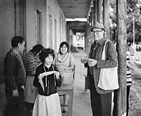

|  |
George M. Foster
Biography
|
WILL THE REAL GEORGE FOSTER PLEASE STAND UP? A BRIEF INTELLECTUAL HISTORY
Eugene Hammel and Laura Nader
Kroeber Anthropological Society Papers, no. 55-56, 1979, pp. 159-164.
CONTENTS
INTRODUCTION
George Foster stands as a challenge to those anthropologists who believe that specialization
is incompatible with breadth of view, that scientific and applied work cannot productively be
part of one career, that historical and long time association with the same community and region
tends to narrow comparative insight. For over forty years Foster has been writing and working
in anthropology, and during those decades he has pursued his curiosity into a broad range of
topics. In this paper, we recall the major contributions of an anthropologist who during a
long career has never stopped asking interesting questions and has always followed leads that
stimulated new insight. He has specialized, he has generalized, he has applied-all in the
pursuit of deepening our understanding of human behavior.
Back to Contents
INTELLECTUAL DEVELOPMENT
We begin with this topic because Foster's personal intellectual history is
a remarkable instance of the ability, all too rare among senior scholars, to
strike out boldly in new directions. Foster was trained, at Northwestern and
at Berkeley, in the American historical school of Anthropology. The emphasis
of that school, emanating from Boas and his students, such as Kroeber, Lowie,
and others, was on meticulous ethnography and historical reconstruction . Like
all his colleagues in that generation, Foster began his work along those lines.
His early efforts in ethnography, based on field work in California (
1939 ; 1944a ) and Veracruz (1940;
1942a; 1943a;1945a), still stand
as basic sources. His historical interpretations relating to the precise origins
of the earliest Iberian immigrants (1951a;
1952a) and the effect of European culture patterns on those of Latin America
(1953a;1954a; 1960a)
were abundantly documented, yet innovative, and stand as classic pieces in ethnohistory
and comparative historical reconstruction (also see 1969c).
Foster did not rest with his achievements in historical reconstruction. An
early interest in kinship and role behavior (1949a) had
developed by the 1960s into a major re-examination of what social anthropology
was all about and into an analysis of bilateral social organization, peasant
society, and the interrelationships of social structure, economics, psychology,
and symbolic systems. All of this involved a major re-orientation and personal
synthesis of disparate concepts, but it did not result in the abandonment of
early interests, rather in their enrichment. He continues to publish detailed
papers on ethnographic subjects (1975b), and although his
attention to explicit historical analysis has waned in recent years, other early
interests in economics, in the technical aspects of pottery making, and in applied
anthropology and public health have continued to flourish. No one in the history
of American ethnography has met the challenge of re-tooling in as effective,
courageous, and productive a manner as has Foster. Not only his work, but the
man, stand as exemplars.
Back to Contents
THEMES AND RESULTS OF RESEARCH
Although Foster's research interests have shifted over time, seven major themes
of his work were already in evidence by about 1950: ethnography and field method;
historical reconstruction; peasant economics; pottery and other aspects of technology;
applied anthropology and development; medicine and public health; role analysis,
social structure and symbolic systems.
Back to Contents
ETHNOGRAPHY AND FIELD METHOD
Foster's concern with ethnographic methodology (see 1951e;
1953d; 1956a; 1961b;
1968b; 1970f; 1974a;
1974d; 1976c; 1979a;
1979b) has been a constant feature of his intellectual
development. His emphasis on precise and meticulous recording and reporting
of field materials, combined with careful analysis of comparative data, is in
the tradition of the natural sciences. Reference has already been made to his
early work in California and Veracruz. The Mexican focus was renewed on the
basis of field work begun in late 1944 (1948a). With its
extensions, this research forms the empirical base for a great deal of Foster's
later publications. First, it provided a foil for his reconnaissance of Spain
(see below) and thus represented part of the foundation for his major interpretive
summary of the effect of Iberian on Latin American culture (1960a).
Second, the 1944-1946 field trip to Tzintzuntzan was but the earliest in a series
spanning the past 35 years. The results of this unparalleled set of observations
on a single community were published in 1967 (1967a); since
that time Foster has continued to return to Tzintzuntzan and this experience
provides the basis for the forthcoming second edition of Tzintzuntzan: Mexican
Peasants in a Changing World (1979c).
It is not possible to overemphasize the importance of this recording over
time, which is perhaps more in the tradition of astronomy than of social science.
Few anthropologists, to our knowledge, have assembled an equivalent record of
first-hand and archival data for the investigation of culture change. Indeed,
he played a major role-with Elizabeth Colson and Thayer Scudder-in bringing
together scholars with similar long-term field research experiences to discuss
the value of this strategy at a 1975 Burg Wartenstein conference (1976h).
The results of this conference have recently appeared in the book Long-Term
Field Research in Social Anthropology (1979a).
A careful reading of Foster's published work spanning the past 35 years discloses
the detail of his broad scope. He has moved from fish nets, pottery and economics
to the skein of social interaction, the native's perception of the social world,
and his symbolic expression of it. He has long understood what many anthropologists
today might learn-that the domain of anthropology is as wide as the activities
of human beings, and that this domain need not be confined to the primitive,
the isolated, the exotic.
Back to Contents
HISTORICAL RECONSTRUCTION
An early interest in reconstruction is evident in a work on the origins of
maize (1947b) and in his first ethnographic
treatment of the history and culture of Tzintzuntzan (1948a).
By the early 1950s, this interest had become comparative, with one of the first
thorough reconnaissances of a European area by an American anthropologist (1951a)
. This field survey of Spanish peasant culture resulted in an important ethnohistorical
essay on the places of origin of Spanish niigrants to the New World (1 952a),
a comparison of Iberian and Latin American medical beliefs (1953b),
and a preliminary statement on the anthropological aspects of imperial conquest
(1954a). A major work, Culture and Conquest (1960a),
followed, detailing the historical relationships between the parent Iberian
and the filial American cultures, and their confluences, segment by segment.
Foster's ideas regarding the crystallization of a "conquest culture" are of
great theoretical importance, applicable far beyond the immediately contributing
corpus of American materials. They have special relevance to the impact of U.S.
culture on many underdeveloped nations around the world, particularly in areas
of American military and touristic presence.
Back to Contents
PEASANT ECONOMY
Foster has made many significant contributions to the study of peasant societies,
beginning with his classic paper on "folk culture" (1953c).
In particular, his ideas about the "dyadic contract" (1961a;
1963) and "the image of limited good" (1965a;
1972b) have been found to have wide relevance in understanding
more generally how people behave under conditions of scarcity. Again, however,
as an explicit subject for empirical investigation, this interest was evident
in several early works (1942a; 1942b;
1944b; 1948a ; 1948b;
etc). Which provided Foster with a solid foundation for the development of his
theoretical orientations focusing on scarcity, as well as his interests in economic
development and applied cultural change. Foster's concept of "limited good"
continues to inspire a great deal of research and growing interest-as reflected
in the articles by Zarrugh, Wagner, and Gamst in this volume-especially as we
in the United States begin to experience scarcity in the areas of natural and
human resources.
Back to Contents
POTTERY AND TECHNOLOGY
Like his interest in economics, this is related to Foster's concern with development
and to his later theories regarding the cultural consequences of a finite resource
base. It resulted, however, in a kind of sub-field of its own-examination of
pottery techniques and analysis of the social structure of potters around the
world. His early descriptions of Mexican potters (1948a;
1948d; 1955a) were followed by others
from places as distant as Bengal (1956c) and the Philippines
(1956d), and his early historical interests crop up in
his discussion of the relationship between mold- and wheel-made pottery (1959a;
1959b), and again in two important contributions of ethnography
to archaeology (1960c; 1960d). A new
turn in his interests, toward social structure and away from history, emerged
in two later papers on the sociology of pottery (1965d) and on the role of contemporary
pottery and basketry in Middle America (1967e).
Back to Contents
APPLIED ANTHROPOLOGY AND ECONOMIC DEVELOPMENT
Much of Foster's interest in this field stems from his early association with
the Institute of Social Anthropology at the Smithsonian in Washington, D.C.
(1946d; 1947a; 1948h;
1950b; 1951d; 1967f;
1979d) and from his concentration on problems of acculturation
in Latin America. His concerns were theoretical, practical, and broadly comparative.
in 1948, Foster wrote a paper (1948i) on intercultural
communication by professional experts-a subject now commonplace but scarcely
perceived thirty years ago. In the early 1950s, he demonstrated the common problems
in community development, irrespective of area, by use of the comparative method
(19 5 1 c; 1955c; 1955e). Foster's most widely read work on the subject of economic
development- Traditional Cultures and the Impact of Technological Change (1962a;
revised edition, 1973a) -was for many years the "Bible"
of applied anthropology. This book, which has been translated into Spanish (1964d),
Portuguese (1964e), and Dutch (1966f),
is without doubt the most widely read and influential book on applied anthropology,
both among anthropologists and non-anthropologists. A more recent work, Applied
Anthropology (1969a), is more theoretical and broader in
its application; it should be required reading for all scientists interested
in shortterm or long-range action programs. Through these and other publications
(1956b; 1960e; 1961c;
1964c; 1968c; 1970b;
1974d) , Foster has done much to develop the field of applied
anthropology and to keep pace with the important social problems of his time.
Back to Contents
MEDICINE AND PUBLIC HEALTH
In some ways, it is difficult to separate Foster's interest in public health
from that in applied anthropology. However, his specific contributions have
had their effect not only in the area of applying of social science knowledge
to practical problems, but also in the realm of culture history. His earliest
works, in accord with his historical concerns, were retrospective; they dealt
with the notion of soul-loss (1944c; 1951b)
and the application of Hippocratic humoral theories in Latin American folk medicine
(1951c; 1953b). In the 1950s and the
1960s, Foster focused on applying anthropological insight to public health problems
(1952c; 1952d; 1952f;
1953d; 1954b; 1958a;
1961b; 1966a; 1966b;
1968a) and his message carried far beyond anthropologists
and the United States. In the 1970s, Foster has continued to urge the application
of anthropological theory to the practical solution of medical problems (1974c;
1975c; 1976b; 1978c),
but his most significant contribution has been to write-with Barbara Gallatin
Anderson-the first comprehensive text on the biocultural and sociocultural phenomena
in medical anthropology (1978a). This global overview of
the field is balanced by his perpetual focus on Latin American folk medicine,
exemplified by his dissection of "Hippocrates' Latin American Legacy" as the
1977 Bernard Moses Memorial Lecture at the University of California, Berkeley
(1978b; 1978d). In conjunction with
his recent paper on "Disease etiologies in non-western medical systems" (1976a),
Foster shows an increasing interest in the logic of medical systems, a subject
only now beginning to receive appropriate attention from anthropologists.
Back to Contents
ROLE ANALYSIS, SOCIAL STRUCTURE, AND SYMBOLIC SYSTEMS
We will concentrate most of our comments on Foster's intellectual development
here because it is in this area that he has shown his major intellectual growth
and has made his most lasting theoretical contributions. We must re-emphasize
the magnitude of the shift in Foster's orientation, stepping as it did across
the major cleavages in contemporary cultural anthropology-between historicism
and structuralism, between empiricism and theory, and in many ways from the
heritage of the nineteenth century to the promise of the twentieth. The importance
of this shift by an anthropologist can be illustrated with a whimsical analogy:
it is rather like Newton, after sinking a series of neat three-cushion shots
in the side pocket, putting up his cue to work out the psi-function with his
chalk. Foster's major theoretical problem from the early 1950s onward has been
the nature of peasant society as held by the natives, and their symbolic expressions
of that view. Many of his ideas are crystallized in Peasant Society: A Reader
(1967b), which he co-edited with two colleagues at BerkeleyJack
M. Potter and May N. Diaz-and which contained a number of Foster's pieces, including
an original essay defining "what is a peasant" (1967c).
Apart from earlier sections in monographs, Foster's first paper on the subject
of peasant society was the one on voluntary organizations (1953a),
coming directly out of his Ibero-American comparative interests. Although it
was largely historical and comparative, it was important in demonstrating the
wide range of fraternal organizations as cohesive units above the level of the
household in peasant society. Most anthropological analysis of higher-level
units had been based on lineal kinship; relatively little attention had been
paid to voluntary organizations. Foster's basic problem was the identification
of structural units and/or principles lying above the family or household but
below the lowest-level political or territorial unit. His solution lay not in
the identification of units per se (other than some voluntary organizations)
but rather in the identification of structural principles and symbolic devices.
Two papers on the dyadic contract (1961a; 1963)
mark the real shift in his thinking and are among the most widely cited papers
in contemporary peasant studies. In them, Foster explores the tenuous but sufficient
linkages established by overlapping pairs of persons in a system of minimal
organic solidarity. The theoretical assumptions underlying this model involve
a finite base of resources, the natives' perception of that limitation, and
the natives' corollary desire to limit and solidify social linkages. Foster's
earlier interests in economics (1942a; 1948b)
and in community development (particularly 1961c; 1962a)
blend here into a higher level theory from which much of the "dyadic contract"
model can be seen to now A paper (1964a) closely related
to those of the dyadic contract (1961a; 1963),
peasant interpersonal relations (1960-1961), and peasant social networks (1969d)
dealt with the function of speech forms in symbolizing social distance. Apart
from its relationship to Foster's developing theory and its earlier roots in
his linguistic descriptions (1948k), this paper is an early
and independent analysis in socio-linguistics. (Foster continues his pursuit
of linguistic dimensions with a recently completed, and still unpublished, paper
entitled "Responsibility for Illness in Tzintzuntzan: A Cognitive-Linguistic
Anomaly").
In the same year that he dealt with the symbolism of speech forms, Foster
examined the economic implications of "treasure tales" (1964b)
for peasant populations with finite resource bases-namely, that since available
goods were limited, no one could become wealthy without robbing another or discovering
treasure. In the next year, Foster issued his provocative statement on the "image
of limited good" (1965a). He followed this "classic" paper
(reflected in its selection for reprinting in the recently issued Selected Papers
from the American Anthropologist, 1946-19 70 [1976e] ),
with a series of articles on peasant world view (1965c;
1966c; 1966h; 1967d;
1970a; 1972a; 1973b).
His ideas on these topics have been hotly debated and widely cited, and remain
among the most controversial in the anthropological study of peasant society.
Although no commentators are neutral on the subject, it is curious that some
accuse Foster of economic determinism while others charge him with cognitive
determinism (see 1966e; 1970c; 1972b;
1974b; 1975a; and 1976d
for his responses to the critics and commentators). For example, about half
of the Fall 1968 issue of Human Organization, the journal of the Society for
Applied Anthropology, was devoted to "Perspectives on the Atomistic-Type Society".
Many of the articles explicitly confront-and most confirm- Foster's ideas about
the structure of peasant life. In summarizing the thrust of the collected papers,
Jerrold Levy concluded that "...Foster has emerged as the new senior theoretician
requiring mention in all studies of peasantry" (1968:234).
Perhaps the most telling criticism of Foster's theory of peasant society and
economics has been that his theory is more widely applicable than he was at
first willing to admit. As Gamst demonstrates for American railroad men in his
article in this volume, "limited good" ideologies and behaviors are characteristic
not only of peasant societies perpetually starved for resources, but also occur
in more advanced societies when the economy ceases to expand. Over a wide range
of cultures, the interpersonal behavior and symbolic expressions of people can
be fairly well predicted from a knowledge of the state and rate of change in
their economic systems. The model may be used to explain strong sanctions against
upward mobility and peasant inertia as well as the creation and use of leveling
mechanisms and the absence of cooperative behavior. The advantage of Foster's
formulation in explaining reluctance to engage in community enterprises, over
competing social scientific theories, or the once widespread colonial explanations
of native stupidity, laziness, and the like, are now obvious.
We stress again that the separate interests that have characterized Foster's
work have in fact been interrelated strands crossing each other repeatedly,
one notion fertilizing another, growth occuring both in breadth and sophistication.
Foster has come to be regarded as a principal figure in peasant studies, applied
anthropology, public health, and medical anthropology, as well as a major contributor
to the field of folklore (1939; 1941b;
1945a; 1945b; 1948c;
1950a; 1952b; 1955b;
1964b; 1966c; 1970a).
Whatever his theoretical focus, he is always recognized as a Mexicanist and
Latin Americanist of the top rank.
Back to Contents
OTHER TALENTS
Pedagogy is, more than anything else, a matter of personality, and Foster's
teaching-style is perfectly in character with his research and publications.
His preparations for lectures are detailed and thorough, his delivery in lecture
or seminar well organized, precise, and solid. His standards are high, but he
is harder on himself than he is on the students. Its style in teaching is, one
might say, old-fashioned: he does not cozy up to students. Learning from Foster
is a no-nonsense proposition and seldom easy on the student's ego. He listens,
although he does not always agree. It is noteworthy that he was the first social
anthropologist in the Berkeley department to take students with him to the field,
involving them directly in his own Mexican field work.
He served as Acting Director of the Museum of Anthropology, and several times
contributed as departmental chairman and graduate advisor. It was Foster who
developed the system of phased steps in the graduate program, substituting meaningful
scrutiny for formal hurdles. He was instrumental in winning financial support
for graduate student fieldwork. Most recently, he has built and maintained the
Medical Anthropology Program, carried on jointly by UC Berkeley and the UC Medical
School in San Francisco. Students have benefited greatly from his organizational
and entrepreneurial abilities. It was Foster who took the initiative in finding
and keeping training grants that led to historically unheard of levels of financial
support for students. No member of the Berkeley department has been more diligent
in pursuit of its welfare. But his contributions went far beyond the Berkeley
academic community.
As a frequent consultant to governmental development and public health programs,
and as a participant in many scientific conferences around the world, his contribution
has been considerable. From 1944 to 1946, while carrying out his initial fieldwork
in Tzintzuntzan, Foster taught at the National School of Anthropology and History
in Mexico City. In the seven years following he was Director of the Institute
of Social Anthropology at the Smithsonian In 1954 he went to Mexico as consultant
on the "History of the Americas" project of the Commission on History of the
Pan American Institute of Geography and History. In 1951, while Director of
the ISA of the Smithsonian, Foster proposed to the Health Division of the Institute
of Inter-American Affairs that he and his Latin American colleagues investigate
the relationships between culture and public health innovations. This idea,
novel at the time but now more universally accepted, was launched by a mimeographed
paper, "A cross cultural analysis of a technical aid program" (1951c),
subsequently translated into Spanish (1952g and 1967h)
and summarized in Portuguese (1953h; 1955f;
1958b). On the basis of this preliminary effort, Foster
participated in a six-month-long analysis (1953d and 1953e)
of the first ten years of North American-Latin American bilateral technical
aid programs in Latin America. Some have said that this demonstration following
in the wake of the ISA work, launched applied anthropology in international
work in its contemporary form (see Richard Adam's quote; in Foster 1979e:214).
This is but an abbreviated mention of professional service, but we should
mention Foster's role as President of the American Anthropological Association
in the volatile period of the late 1960s. He was instrumental in reorganizing
the A.A.A.'s administration to enable it to cope with a greatly increased membership,
and he played an important role in the acquisition and organization of its new
headquarters in Washington. All of these talents and experiences have enriched
his intellectual development, just as one would expect from a scholar with a
synthetic mind.
Back to Contents
SUMMARY
George Foster's work over the past forty years-covering the fields of peasant
economics, material culture, folklore, linguistics, symbolism, role analysis,
community development, and public health-has been based on personal field work
and consultancies in more than a dozen countries ranging from Afghanistan to
Peru. As if his publication record of 21 books and monographs, more than 100
articles, and 45 book reviews were not sufficient, Foster has always been concerned
that his works be translated and reprinted so as to be accessible to scholars
outside of the United States and other English-speaking countries. The eagerness
of anthropologists and publishers to have his works is reflected in the translation
of more than 20 of his major books and articles into Spanish, Portuguese, and
other languages, as well as in the reprinting in English of nearly 30 of his
works. This continuing heavy demand for his ideas is also documented by Foster's
entries in the Social Science Citation Index. In these days when the half-life
of scholarly knowledge has diminished to only a few years, it is remarkable
to see that some of his works published over twenty-five years ago are still
consistently cited (personal communication from Ms. Dorothy Koenig, Librarian
of the Anthropology Library at Berkeley).
Perhaps even more impressive than the honored status of his individual works
is the integrity of the full corpus of Foster's scientific, academic, pedagogical,
and professional contributions. His career is surprisingly of a piece; nothing
in this record is really isolated. For example, his work on pottery is a part
of his interest in the economy, which blends with that on community development
and public health, and his interest in community development (and his perception
that peasants often lack such an interest) sparked investigations of role behavior,
worldview, and culture change. All of his research experience, professional
devotion, and productivity have been brought to his teaching and to his administrative
responsibilities in the Department and University in which he has spent the
last 25 years. His own intellectual development is an object lesson, and his
influence on students in social science has been and continues to be immeasurable.
Back to Contents
Acknowledgement: The authors wish to thank Ms. Dorothy Koenig (Librarian
of the Anthropology Library at Berkeley) and Ms. Gerry Moos (Secretary in the
Anthropology Department at Berkeley, with special responsibility for the NIGMS
Traineeship Program directed by George Foster) for their assistance in the preparation
of this article. We also wish to thank Robert V. Kemper for providing a number
of editorial suggestions which have been incorporated into the final version
of this article.
REFERENCES
1939 "War stories from two enemy tribes." Journal
of American Folklore 52:141-154 (with Walter Goldschmidt and Frank Essene).
1940 Notes on the Popoluca of Veracruz.
Mexico D. F.: Instituto Panamericano de Geografia e Historia, Publ. No. 5 1.
1941a "From a Mexican diary." International Quarterly,
Winter pp. 33-36.
1941b "String figure divination." American Anthropologist
43:126-127.
1942a A primitive Mexican economy. Monographs
of the American Ethnological Society, V. New York: J. J. Agustin.
1942b "Indigenous apiculture among the Popoluca of
Veracruz." American Anthropologist 44:538-542.
1942c "Ordeal by vapor." Bulletin of the Pan American
Union 76(8):443-446 (August).
1942d Review of Stig Ryden, A study of the Siriono
Indians. In Boletin Bibliografico de Antropologia Americana 6:137-138.
1942e Review of Alfred Metraux, The native tribes of
eastern Bolivia and western Matto Grosso. In Boletin Bibliografico de Antropologia
Americana 6:138-139.
1943a "The geographical, linguistic, and cultural position
of the Popoluca of Veracruz." American Anthropologist 45:531-546.
1943b Review of E. F. Castetter and W. H. Bell, Pima
and Papago Indian Agriculture. In Pacific Historical Review 11:85-86
(March).
1944a A summary of Yuki culture. University of California
Anthropological Records 5(3):155-244. Berkeley: University of California
Press.
1944b "Primitive and machine-age productivity. The
American Journal of Economics and Sociology 3:583-598.
1944c "Nagualism in Mexico and Guatemala." Acta
Americana 2:85-103.
1945a Sierra Popoluca folklore and beliefs. University
of California Publications in American Archaeology and Ethnology 42(2):177-250.
Berkeley: University of California Press.
1945b "Some characteristics of Mexican Indian folklore."
Journal of American Folklore 58:225-235.
1945c Review of Alexander and Dorothea Leighton, The
Navajo door. In America Indigena 5:90-9 1.
1945d Review of Alfonso Villa R., The Maya of East
Central Quintana Roo. In America Indigena 5:334-336.
1946a "Expedicion etnologica a la region del lago
de Patzcuaro." Morelia, Michoacan: Anales del Museo Michoacano, Segunda
Epoca Num. 4, pp. 65-67.
1946b Review of Ralph L. Beals, The contemporary culture
of the Cahita Indians. In Journal of American Folklore 59:336-338.
1946c Review of Ralph L. Beals, Ethnology of the Western
Mixe. In Boletin Bibliografico de Antropologia Americana 8:166-168.
1946d "The Institute of Social Anthropology." Boletin
Bibliografico de Antropologia Americana 9:22-25.
1947a "The Institute of Social Anthropology." The
Record (Scientific and Cultural Cooperation) 3(6):7-10 (June). Washington,
D.C.: The Department of State.
1947b "The origin of maize." In Frances Toor, A
treasury of Mexican folkways, pp. 502-507. New York: Crown Publishers.
1948a Empire's children: the people of Tzintzuntzan.
Washington, D.C.: Smithsonian Institution, Institute of Social Anthropology
Publ. No. 6.
1948b "The folk economy of Mexico with special reference
to marketing." The Journal of Marketing 13(2):153-162 (October).
1948c "The current status of Mexican Indian folklore
studies." Journal of American Folklore 61:368-382.
1948d "Some implications of modem Mexican mold-made
pottery." Southwestern Journal of Anthropology 4:356-370.
1948e "Museos ethnograficos al aire libre para
las Americas." America Indigena 8:89-94.
1948f "Museos etnograficos al aire libre para
las Americas." Revista Geografica Americana 29(178):47-48 (Julio). Buenos
Aires. [Reprinted from original in America Indigena]
1948g "La base de la cultura modema de Tzintzuntzan,
Mich." In El occidente de Mexico (V Mesa Redonda Compte Rendue), pp.
201-202. Also "Resumen linguistica y etnografia contemporanea p. 221. Mexico,
D. F,: Sociedad Mexicana de Antropologia.
1948h "The Institute of Social Anthropology 1947-1948."
Mexico, D. F.: Boletin Bibliografico de Antropologia Americana 11:104-107.
1948i "Cultural cautions for personnel going to Latin
America." Washington, D.C.: Prepared for the Foreign Service Institute. 12p.
(Mimeographed).
1948j Review of D. B. Stout, San Blas acculturation:
an introduction. In Boletin Bibliografico de Antropolgia Americana 10:201-203.
1948k Sierra Popoluca speech. Washington, D.C.:
Smithsonian Institution, Institute of Social Anthropology, Publ. No. 8.
1949a "Sierra Popoluca kinship terminology and its
wider implications." Southwestern Journal of Anthropology 5:330-344.
1949b "The nature of the Indian problem." Indians
of the United States. Cuzco, Peru, 3 p. (Contributions by members of the
delegation and advisers to the policy board of the National Indian Institute
for the Second Inter-American Conference on Indian life, convened at Cuzco,
Peru, June 24-July 4, 1949. Offset papers given to delegates bound with paper
covers.)
1949c Review of Archives Ethnos (No. 1, Buenos Aires,
1948) and Revista do Museu Paulista (Nova Serie, Vol. 1, Sao Paulo, 1947). Journal
of American Folklore 62:442-443.
1949 d Review of Ralph Linton, Most of the world. The
peoples of Africa, Latin America, and the East today. In American Anthropologist
51:474-47 5.
1950a "Mexican and Central American Indian folklore."
The Funk and Wagnalls Standard Dictionary of Folklore, Mythology and Legend
2:711-716. New York: Funk and Wagnalls Co.
1950b "La Smithsonian Institution y su. labor cientifica."
Estudios Americanos 2(6):295-299 (Mayo). Sevilla, Spain.
1950c Review of Oliver LaFarge, Santa Eulalia The religion
of a Chuchumatan Indian town. In Journal of American Folklore 63:485-486.
1951a "Report on an ethnological reconnaissance of
Spain." American Anthropologist 53:311-325.
1951b "Some wider implications of soul-loss illness
among the Sierra Popoluca." In Homenaje al Doctor Alfonso Caso, pp. 167-174.
Mexico, D.F: Sociedad Mexicana de Antropologia.
1951c A cross-cultural anthropological analysis
of a technical aid program (mimeographed), July 25, 104 p. Washington, D.C.:
Smithsonian Institution. (Editor)
1951d "The Institute of Social Anthropology, Washington,
1950." Boletin Bibliogrdfico de Antropologfa Americana 13(Part 1):74-76.
195le "Suggestions for field recording of information
on the Hippocratic classification of diseases and remedies." Kroeber Anthropological
Society Papers 5:1-5. Berkeley, California (with John H. Rowe).
1951f "War stories from two enemy tribes." In R. F.
Heizer and M. A. Whipple (eds.), The California Indians, pp. 383-396.
Berkeley: University of California Press. [Reprinted from 1939 JAFL article]
1951g Review of Carlo Levi, Christ stopped at Eboli.
In Boletin Bibliografico de Antropologia Americana 13(Part 2):45-47.
1952a "The significance to anthropological studies
of the places of origin of Spanish emigrants to the New World." In Sol Tax (ed.),
Acculturation in the Americas, pp. 292-298. Proceedings and Selected Papers
of the XXIX International Congress of Americanists. Chicago: University
of Chicago Press.
1952b "The feixes of Ibiza." The Geographical Review
42:222-237.
1952c "Relationships between theoretical and applied
anthropology: a public health program analysis." Human Organization 11(3):5-16.
1952d "Report of technical discussions on the methodology
of health protection in local areas" (Rapporteur, Group 5), Fifth World Health
Assembly. Chronicle of the World Health Organization 6(7-8):219-241 (August).
Geneva, Switzerland.
1952e "Influencia de las costumbres y creencias
populares en los servicios de un centro de salud." Boletin de la Oficina
Sanitaria Pan-Americana 33:283-297. [Spanish condensation of "A cross-cultural
anthropological analysis," 195 1
1952f "Papel de la antropolo i en los programas
de salud publica." Boletin de la Oficina Sanitaria Panamericana 33:345-347.
1952g Analisis antropologico intercultural de un
programa de ayuda technica. Mexico, D.F.: Instituto Nacional Indigenista.
[Translation of "A cross-cultural anthropological analysis of a technical aid
program," 195 11 Mimeographed. (Editor)
1952h "Las 'feixes' de Ibiza." Estudios Geograficos
13:559-568. [Translation of "The feixes of Ibiza," 19521
1952i Review of Oscar Lewis, Life in a Mexican village:
Tepoztlan restudied. In American Anthropologist 54:239-240.
1952j Review of Sol Tax (ed.), The civilizations of
Ancient America: selected papers of the XXIX International Congress of Americanists
In The Americas 9(2):256-258 (October).
1952k Review of John Gillin, The culture of security
in San Carlos: a study of a Guatemalan community of Indians and Ladinos. In
Boletin Bibliogrdfico de Antropologia Americana 14(Part 2):119-120.
19521 Review of Ruth Matilda Anderson, Spanish costume:
Extremadura. In American Anthropologist 54:420.
1953a "Cofradia and compadrazgo in Spain and Spanish
America." Southwestern Journal of Anthropology 9:1-28.
1953b "Relationships between Spanish and Spanish-American
folk medicine." Journal of American Folklore 66:201-217.
1953c "What is folk culture?" American Anthropologist
55:159-173.
1953d "Use of anthropological methods and data in planning
and operation" (10-year evaluation of the bilateral health programs, Institute
of Inter-American Affairs). Public Health Reports 68(9):841-857 (September).
1953e "Cultural aspects." Chapter 2 in 10 years
of cooperative health programs in Latin America, pp. 11-29. Washington,
D.C: U. S. Public Health Service.
1953f "Que es la cultura folk?" Notas e Informaciones,
Ciencias Sociales 4(23):205-213 (October). Washington D.C.: Pan American
Union. [Translation and abridgment of "What is folk culture?" 1953c]
1953g "Changing health concepts in Latin America."
The Health Education Journal 11:94-103. London. [Condensation of "A cross-cultural
survey"]
1953h "0 papel da antropologia nos programas de sau'de
pu'blica." Actualidades Medico-Sanitarias Ano 9(No. 44):1572-1574 (Fevereiro).
Rio de Janeiro: Servicio Especial de Saude Publica, Ministerio da Educacdo e
Saulde. [Translated from same article in Boletin de la Oficina Santaria Panamericana,
October, 19521
1953i Review of Gonzalo Aguirre Beltran, de la poblacion
indigena de la cuenca del Tepalcatepec. In American Anthropologist 55:271-272.
1953j Review of Woodrow Borah, New Spain's century
of depression. In American Anthropologist 55:128-129.
1953k Review of Wilson M. Hudson (ed.), The healer
of Los Olmos and other Mexican lore. In Midwest Folklore 3:120-122.
1954a "Aspectos antropologicos de la conquista
espanola de America." Estudios Americanos, Revista de la Escuela de Estudios
Hispano-Americanos, Sevilla, 8:155-171.
1954b "The human factor in public health programs."
Bulletin of Sanitation, No. 2, April 1, pp. 1-4 (Mimeographed). "The
Bulletin is issued by the Northern California Chapter of the California Association
of Sanitarians, National Association of Sanitarians, Inc."
1954c Review article "The 'Programa de Historia de
America," of the Pan American Institute of Geography and History." In Revista
Interamericana de Bibliografia 4:301-304.
1954d Review of Fernando Camara Barbachano, Chacaltianguis:
comunidad rural en la ribera del Papaloapan. In American Anthropologist
56:313-314.
1954e Review of Juan Comas, Bibliografia selectiva
de las culturas indigenas de America. In America Indigena 14:93-95.
1954f Review of Pedro Carrasco, Tarascan folk religion:
an analysis of economic, social, and religious interactions. In American Anthropologist
56:13 1.
1955a Contemporary pottery techniques in southern
and central Mexico. New Orleans: Tulane University, Middle American Research
Institute, Publ. 22:1-48.
1955b "The fire walkers of San Pedro Manrique, Soria,
Spain." Journal of American Folklore 68:325-332.
1955c "Guide lines to community development programs."
Public Health Reports 70(l):19-24 (January).
1955d "Salt production in the Balaerics" [Abstract
of Juan Vila Valenti "Ibiza y Formentera, islas de la sal," Estudios Geograficos
14:363-408, 1953]. Geographical Review 45:117.
1955e Report on community development programs in
India, Pakistan and the Philippines. Washington, D.C.:U.S. Dept. of State,
International Cooperation Administration (with Harold S. Adams and Paul Taylor).
1955f "Diretrizes para programas de desenvolvimento
de communidade." Actualidades Medico-Sanitarias Ano Saude 11 (No. 55):2132-2144
(July-December). Rio de Janeiro: Servicio Especial de Saude Publica, Ministerio
de Saude [Translation of "Guide lines to community development programs," 19551
1955g Review of Alfonso Caso et al., Metodos y resultados
de la polftica indigenista en Mexico. In America Indigena 15:234-236.
1955h Review of Lyle Saunders, Cultural difference
and medical care. In Economic Development and Cultural Change 4:94-96.
1955i Review of Ignacio Bernal and Eusebios Davalos
Hurtado (eds.), Huastecos Tontonacos y sus vecinos. In Ciencias Sociales
6(32):104-106.
1955j Review of Elman R. and Helen S. Service, Tobati:
Paraguayan town.. In American Anthropologist 57:635-636.
1955k Review of J. A. Pitt-Rivers, The people of the
sierra. In American Anthropologist 57:642-643.
1955l Review of Gonzalo Aguirre Beltran, Formas de
gobierno indigena. In Boletin Bibliogrdfico de Antropologia Americana
17(Partil): 137-138.
1956a "Working with people of different cultural backgrounds."
California's Health 13(14):107-110 (January 15).
1956b "Applied anthropology and modem life." In Estudios
antropologicos publicados en homenaje al doctor Manuel Gamio, pp.333-341.
Mexico, D. F: Universidad Nacional Autonoma de Mexico, Sociedad Mexicana de
Antropologia.
1956c "Pottery-making in Bengal." Southwestern Journal
of Anthropology 12:395-405.
1956d "Resin-coated pottery in the Philippines." American
Anthropologist 58:732-733.
1956e "Comentario" (on "Los Indios en la
economia de Guatemala," by Sol Tax). In Integracion 'Social en Guatemala
(Jorge Luis Arriola, ed.), pp. 129-136. Guatemala City.
1957a "Guidelines to community development programs."
Community Development Bulletin 8(2):32-38 (March). [Reprinted from Public
Health Reports, 195 51
1957b "Working with people of different cultural backgrounds."
The Health Education Journal 15(2):63-71 (May). London. [Reprinted from
California's Health, January 15, 19561
1957c "Some social factors related to the success of
a public health program." In Lyle W. Shannon (ed.), Underdeveloped areas.
A book of readings. New York: Harper and Bros. [Adapted from "Relationships
between theoretical and applied anthropology," Human Organization 11(3):5-16,
1952]
1957d Review of Roberto de la Cerda Silva, Los indigenas
mexicanos de Tuxpan, Jal. In Hispanic American Historical Review 37:112.
1958a Problems in intercultural health programs.
New York: Social Science Research Council, Pamphlet No. 12.
1958b "Pautas para programas de desarrollo de la comunidad."
Buenos Aires: Ministerio de Asistencia Social y Salud Publica, Direccion
de Educacion Sanitaria y Social. Mimeographed, 7 pp. [Translation of "Guide
lines to community development programs," 1955]
1958c Review of Ralph L. Beals and Norman D. Humphrey,
No frontiers to learning. The Mexican student in the United States. In Science
127(3291):192.
1959a "The Coyotepec molde and some associated problems
of the potter's wheel." Southwestern Journal of Anthropology 15:53-63.
1959b "The potter's wheel: an analysis of idea and
artifact in invention." Southwestern Journal of Anthropology 15(2):99-119.
1959c "Cofradia y compadrazgo en Espana e Hispano America."
Revista del Museo Nacional 28:248-275. Lima [Translation of "Cofradia
and Compadrazgo in Spain and Spanish- America," 1953]
1959d "Influencia, de las costumbres y creencias populares
en los servicios de un centro de salud." Mexico, D.F.: Impreso Te'cnico,
Academia Mexicana de Pediatria 7:3-9 and 8:3-13. [Translation, with some
modification, of A cross-cultural anthropological analysis of a technical aid
program, 19511
1959e Review of Raymond H. Thompson, Modern Yucatecan
Maya pottery making. In American Antiquity 25:287.
1960a Culture and conquest: America's Spanish heritage.
New York: Wenner-Gren Foundation for Anthropological Research, Viking Fund Publications
in Anthropology No. 27.
1960b "Edward Winslow Gifford 1887-1959." American
Anthropologist 62:327-329.
1960c "Life-expectancy of utilitarian pottery in Tzintzuntzan,
Michoacan, Mexico." American Antiquity 25:606-609.
1960d "Archaeological implications of the modern pottery
of Acatlan, Puebla, Mexico." American Antiquity 26:205-214.
1960e "Nationalism in Africa: an attempt at prediction."
Kroeber Anthropological Society Papers 23:1-6. Berkeley, California.
1960f "Algunos procesos de los cambios socio-culturales."
Boletin informativo Nos. 29-30:6-9 (AbrilSeptiembre). Patzcuaro, Mexico:
Centro Regional de Educacion Fundamental para la America Latina (CREFAL).
1960g Problemas en los programas sanitarlos interculturales.
Mexico, D.F: Centro Regional de Ayuda Technia, Administracion de Cooperacion
Internacional (ICA). [Translation of Problems in intercultural health programs,
1958]
1960h Review of Georgette Soustelle, Tequila: un village
nahuatl du Mexique oriental. In The Hispanic American Historical Review
(May), 40:324-325.
1960 "Interpersonal relations in peasant society," and
"Rejoinder." Human Organization 19:174-178; 1961 183-184.
1961a "The dyadic contract: a mode for social structure
of a Mexican peasant village." American Anthropologist 63:1173-1192.
1961b "Public health and behavioral science: the problems
of teamwork." American Journal of Public Health and the Nation's Health
51:1286-1293.
1961c "Community development and the image of the static
economy." Community Development Bulletin 12:124-128.
1961d "Cofradfa y compadrazgo en Espana e Hispano-American."
Guatemala Indigena 1: 107-147. [Translation of "Confradia and Compadrazgo
in Spain and Spanish America," 1953; Guatemalan version is that first published
in the Revista del Museo Nacional de Lima, Peru, 28:248-275, 1959. Translation
by Raquel Chocano]
1962a Traditional cultures: and the impact of technological
change. New York: Harper & Bros.
1962b Cultura y conquista: la herencia espanola
de America. Xalapa, Mexico: Universidad Veracruzana (Biblioteca de la Facultad
de Filosofia y Letras, 14). [Translation by Carlo Antonio Castro of Culture
and Conquest, 1960]
1962c "What is folk culture?" The Bobbs-Merrffl
Reprint Series in the Social Sciences, No A-71. [Reprinted from American
Anthropologist 55:159-173, 19531
1963 "The dyadic contract, II: patron-client relationship."
American Anthropologist 65:1280-1294.
1964a "Speech forms and perception of social distance
in a Spanish-speaking Mexican village." Southwestern Journal of Anthropology
20:107-122.
1964b "Treasure tales, and the image of the static
economy in a Mexican peasant community." Journal of American Folklore
77:39-44.
1964c "El desarrollo de la comunidad en pequenas poblaciones:
un punto de vista antropologico." In Los aportes de la sociologia y de la
antropologia para el desarrollo de la comunidad, pp. 41-53. Guatemala City:
Publicaciones de la Secretaria de Bienestar Social del Gobierno de la. Republica
de Guatemala, No. 5.
1964d Las culturas tradicionales y los cambios tecnicos.
Mexico-Buenos Aires: Fondo de Cultura Economica. [Translation of Traditional
cultures: and the impact of technological change, 1962]
1964e Las culturas tradicionais e o impacto da teenologia.
Sao Paulo: Editora Fundo de Cultura. [Translation of Traditional cultures, 1962]
1964f Review of Bert F. Hoselitz and Wilbert E. Moore
(eds.), Industrialization and society. In American Anthropologist 66:667-669.
1965a "Peasant society and the image of limited good."
American Anthropologist 67:293-315.
1965b "El caracter del campesino." Revista de Psicoanalisis,
Psiquiatria y Psicologia 1:83-106. [Spanish version of "Peasant society
and the image of limited good"]
1965c "Cultural responses to expressions of envy in
Tzintzuntzan." Southwestern Journal of Anthropology 21:24-35.
1965d "The sociology of pottery: questions and hypotheses
arising from contemporary Mexican work." In F. R. Matson (ed.), Ceramics
and man. New York: Wenner-Gren Foundation for Anthropological Research,
Viking Fund Publications in Anthropology No. 41:42-61.
1965e "The new National Museum of Anthropology in Mexico
City." American Anthropologist 67:734-736.
1966a "Social anthropology and nutrition of the pre-school
child, especially as related to Latin America." Chapter 25 in Pre-school
child malnutrition: primary deterrent to human progress. Washington, D.C.:
National Academy of Sciences-National Research Council, Publication 1282, pp.
258-266. [An International Conference on Prevention of Malnutrition in the Pre-School
Child, Washington, D.C., December 7-11, 19641
1966b "Cross-cultural medical education: some social
and cultural factors." The Journal of Medical Education 41(9) Part 2,
pp. 166-174. [Part 2 is titled Manpower for the world's health (Henry van Zile
Hyde, ed.), and is the "Report of the Institute of International Medical Education"
convened in Washington, D.C., March 27-30, 1966-by the Association of American
Medical Colleges]
1966c "Euphemisms and cultural sensitivity in Tzintzuntzan."
Anthropological Quarterly 39:53-59.
1966d Contemporary Latin American culture: an anthropological
sourcebook. New York: Selected Academic Readings, Inc. (Editor)
1966d Contemporary Latin American Culture: an anthropological sourcebook.
New York: Selected Academic Readings, Inc. (editor).
1966e "Foster's reply to Kaplan, Saler, and Bennett"
[On "Image of limited good"] American Anthropologist 68:210-214.
1966f Oude Culturen in Een Technische Wereld.
Utrecht, Antwerpen: Aula-Boeken, No. 248. [Translation of Traditional cultures:
and the impact of technological changes]
1966g "Interpersonal relations in peasant society."
Bobbs-Merrill Reprint Series A292. [Reprinted from Human Organization,
1960-19611
1966h "World view in Tzintzuntzan: Reexamination of
a concept." In Summa anthropologica en homenaje a Roberto J. Weitlaner.
Mexico, D.F: Instituto Nacional de Antropologia e Historia. pp. 385-393.
1966i Review of Edward W. Gifford, The Coast Yuki.
In American Anthropologist 68:783-784.
1966j Review of William McCord, The springtime of freedom:
evolution of developing societies. In Man 1:262.
1967a Tzintzuntzan: Mexican peasants in a changing
world. Boston: Little, Brown & Co. 372p.
1967b Peasant society: a reader. Boston: Little,
Brown & Co. [with Jack M. Potter and May N. Diaz]
1967c "Introduction: what is a peasant?" In Jack M.
Potter; May N. Diaz; and George M. Foster (eds.), Peasant society: a reader,
pp. 2-14. Boston: Little, Brown & Co.
1967d "Introduction: peasant character and personality."
in Jack M. Potter; May N. Diaz; and George M. Foster (eds.), Peasant society:
a reader, pp. 296-300. Boston: Little, Brown & Co.
1967e "Contemporary pottery and basketry." In Manning
Nash (ed.), Handbook of Middle American Indians, vol. 6, pp. 103-124.
Austin: University of Texas Press.
1967f "The Institute of Social Anthropology of the
Smithsonian Institution 1943-1952." Anuario Indigenista 27:173-192. Mexico:
Institute, Indigenista Interamericano.
1967g "Pautas para programas de desarrollo de la comunidad,"
in Gonzalo Aguirre Beltran (ed.), Medicina y antropologia. Mexico, D.F.:
Instituto Indigenista Interamericano, Documentos de Trabajo AM. 1-11, Cuadernos
No. 1. (AM-9, 12pp.). [Translation of "Guide lines to community development
programs," Public Health Reports 70(l):19-24 (Jan.) 195 5]
1967h Analisis antropologico intercultural de un programa
de ayuda tecnica." In Gonzalo Aguirre Beltran (ed.), Medicina y antropologia.
Mexico, D.F.: Instituto Indigenista Interamericano, Documentos de Trabajo AM.
1 11, Cuaderno No. 1. (AM-3, 70 pp.). [Translation of "A cross-cultural anthropological
analysis of a technical aid program." Washington, D.C.: Smithsonian Institution,
195 1 c.]
1967i "El trabajo con gente de distintos trasfondos
culturales." In Gonzalo Aguirre Beltran (ed.), Medicina y antropologia.
Mexico, D.F.: Instituto Indigenista Interamericano, Documentos de Trabajo AM.
1-11, Cuadernos No. 1. (AM-5, lOpp.). [Translation of "Working with people of
different cultural backgrounds," California's Health 13(14):107-110, Jan. 15,
19561
1967j "The dyadic contract: a model for the social
structure of a Mexican peasant village." In Jack M. Potter; May N. Diaz; and
George M. Foster (eds.), Peasant society: a reader, pp. 213-230. Boston:
Little, Brown & Co. [Adapted from Chapter 11, Tzintzuntzan: Mexican Peasants
in a Changing World. Boston: Little, Brown, & Co., 19671
1967k "Peasant society and the image of limited good."
In Jack M. Potter; May N. Diaz; and George M. Foster (eds.), Peasant society:
a reader, pp.300-323. Boston: Little, Brown, & Co. [Reprinted from American
Anthropologist 67:293-315, 19651
1967l Review of Arthur J. Rubel, Across the tracks:
Mexican-Americans in a Texas city. In American Anthropologist 69:238.
1968a "Commentary" on "Illness and health services"
(Chapter 11, Social science and health planning: culture, disease and health
services in Colombia, R. F. Badgley, ed.). In The Milbank Memorial Fund Quarterly
46(2), Part 2:171-176.
I
1968b "The social anthropological field experience."
Kroeber Anthropological Society Papers 39:1-19.
1968c "El cambio cultural planificado y la irrigacion
en la Cuenca del Lago de Patzcuaro." Mexico, D.F.: Anuario Indigenista
28:45-5 1.
1968d "The sociology of pottery." In Yehudi A. Cohen
(ed.), Man in adaptation: the bio-social background, pp. 317-328. Chicago:
Aldine Publishing Co. [Originally published as "The sociology of pottery: questions
and hypotheses arising from contemporary Mexican work," In F. R. Matson (ed.),
Ceramics and man, pp. 43-61. Viking Fund Publications in Anthropology No. 41,
19651
1968e "The folk economy of rural Mexico with special
reference to marketing." In M. S. Sommers and J. B. Kernan (eds.), Comparative
marketing systems, pp. 433-446. New York: Appleton-Century-Crofts. [Originally
published in The Journal of Marketing 13:153-162, 1948]
1968f Review of Michael Belshaw, A village economy:
land and people of Huecorio. In Hispanic American Historical Review 48:714-715.
1969a Applied anthropology. Boston: Little,
Brown & Co.
1969b Review of R. A. M. van Zantwijk, Servants of
the saints: the social and cultural identity of a Tarascan community in Mexico.
In Anales de Antropologia 6:295-298. [Review in Spanish]
1969c "The Mixe, Zoque, and Popoluca." In Evon Vogt
(ed.), Handbook of Middle American Indians, Vol. 7, Pt. 1, pp. 448-477.
Austin: University of Texas Press.
1969d "Godparents and social networks in Tzintzuntzan."
Southwestern Journal of Anthropology 25:261-278.
1969e Review of Andre Corten and Andree Corten, Cambio
social en Santo Domingo. In Man 4:674.
1970a "Character and personal relationships seen through
proverbs in Tzintzuntzan, Mexico." Journal of American Folklore 83:304-317.
1970b "Anthropology and the problems of society." [unsigned].
In Allen H. Smith and John L. Fischer (eds.), Anthropology, pp. 78-93.
The Behavioral and Social Science Survey [BASS]. Englewood Cliffs, NJ: Prentice-Hall.
1970c "Comments on Gerrit Huizer, "'Resistance to change'
and radical peasant mobilization: Foster and Erasmus reconsidered." Human
Organization 29:313-314.
1970d "Robert J. Weitlaner 1883-1968." American
Anthropologist 72:343-348.
1970e Review of June Nash, In the eyes of the ancestors.
In The Hispanic American Historical Review 50:785-786.
1970f "Methods of studying Mexican peasant personality:
Rorschach, TAT and dreams." Anthropological Quarterly 43:225-242. (with
Michael Maccoby)
1970g "Culture and conquest: the concept of cultural
crystallization." In Robert Wauchope (ed.), The Indian background of Latin
American history, pp. 189-201. New York: Alfred A. Knopf. [Chapter 17 of
Culture and conquest, 19601
1970h "Interpersonal relations in peasant society."
In Monte Palmer (ed.), The human factor in political development, pp.
18-29. Waltham, Mass.: Ginn and Co. [Reprint of 1960 Human Organization article]
1970i "How cultures change." In Richard G. Emerick
(ed.), Readings in introductory anthropology, pp. 294-303, vol. 2. Berkeley:
McCutchan Publishing Corp. [Reprint of Chapter 2 of Traditional cultures, 1962]
1971a Letter to the Editor: "Anthropology on the warpath:
an exchange." The New York Review April 8, pp. 43-44.
1971b "Comentario sobre 'Antropologia en pos de guerra...
America Indigena 31:1049-1054.
1971c "Peasant society and the image of limited good."
In Y. A. Cohen (ed.), Man in adaptation: the institutional framework
pp. 298-311. Chicago: Aldine.
1971d Review of Maurice Boyd, Tarascan myths and legends.
In Hispanic American Historical Review 51:186-187.
1971e Review of Robert F. G. Spier, From the hand of
man: primitive and preindustrial technologies. In Man 6:300-301.
197 1 f Review of Erich Fromm and Michael Maccoby,
Social character in a Mexican village. In The American Journal of Sociology
77:336-338.
1972a "The anatomy of envy: a study in symbolic behavior,"
and "Reply" [to commentators]. Current Anthropology 13:165-186, 198-202.
1972b "A second look at limited good." Anthropological
Quarterly 45:57-64.
1972c "Foreword" to David C. Korten, Planned change
in traditional society: psychological problems of modernization in Ethiopia,
pp. v-viii. New York: Praeger.
1972d Tzintzuntzan: los campesinos mexicanos en
un mundo en cambio. Mexico, D.F.: Fondo de Cultura Economica. [Translation
of Tzintzuntzan: Mexican peasants in a changing world, 1967]
1972c "Peasant society and the image of limited good."
In J. D. Jennings, and E. A. Hoebel, (eds.), Readings in anthropology,
pp. 324-334. New York: McGraw-Hill.
1973a Traditional societies and technological change.
New York: Harper & Row. [2nd. ed. of Traditional Cultures, 1962].
1973b "Dreams, character, and cognitive orientation
in Tzintzuntzan." Ethos 1: 106-12 1.
1973c "The dyadic contract in Tzintzuntzan IL patron-client
relationship." In Dwight B. Heath, (ed.), Contemporary Culture and Societies
of Latin America, 2nd. ed., pp. 271-285. New York: Random House. [Reprint
of 1963 American Anthropologist article]
1974a Anthropologists in cities. Boston: Little,
Brown & Co. (with R. V. Kemper, co-editor).
1974b "Limited good or limited goods: observation of
Acheson." American Anthropologist 76:53-57.
1974c "Medical anthropology: some contrasts with medical
sociology." Medical Anthropology Newsletter 6(l):1-6.
1974d "Technical assistance methodology: an anthropologist's
view." Development Digest [Prepared by the National Planning Association
for A. 1. D.] 12(3):87-94.
1974e "Kalervo Overg 1901-1973." American Anthropologist
76:357-360 (with Marlin R. McComb).
1974f Antropologfa aplicada. Mexico: Fondo de
Cultura Economica [Translation of Applied anthropology, 1969.
1974g "La sociedad campesina y la imagen del bien limitado."
In L. J. Bartolome and E. E. Gorostiaga (eds.), Estudios sobre el campesinado
latino-americano, pp. 57-90. Buenos Aires: Ediciones Periferia S.R.L. [Translation
of "Peasant society and the image of limited good," 1965.]
1974h "El contrato diadico: un modelo para la estructura
social de una aldea de campesino mexicanos." In L. J. Batolome and E. E. Gorostiaga
(eds.), Estudios sobre el campesinado latino-americano, pp. 129-158.
Buenos Aires: Ediciones Periferia S. R. L. [Translation of "The dyadic contract,
etc.," 19611
1975a "'Comments' on J. R. Gregory, 'Image of limited
good, or expectation of reciprocity?... Current Anthropology 16:86-87.
1975b "Urbanization in Mexico: the view from Tzintzuntzan."
Latin American urban research 5:53-75. Beverly Hills: SAGE Publications.
(with R. V. Kemper).
1975c "Medical anthropology: some contrasts with medical
sociology." Social Science and Medicine 9:427-432. [Reprint of 1974c]
1975d "The concept of culture." In M.R. Hollnsteiner
(ed.), Society, culture, and the Filipino 1:69-76. Quezon City: Ateneo
de Manila, Institute of Philippine Culture. [Excerpted from Traditional cultures
1962, pp. 11-21]
1976a "Disease etiologies in non-western medical systems."
American Anthropologist 78:773-782.
1976b "Medical anthropology and international health
planning." Medical Anthropology Newsletter 7(3):12-18.
1976c "Graduate study at Berkeley 1935-1941." In J.
P. Loucky and J. R. Jones (eds.), Paths to the symbolic self.essays in
honor of Walter Goldschmidt. Anthropology UCLA 8(1-2):9-18.
1976d "Reply" to Frans J. Schryer, "A reinterpretation
of treasure tales and the Image of Limited Good." Current Anthropology
17:710-713.
1976e "Peasant society and the image of limited good."
In R. F. Murphy (ed.), Selected papers from The American Anthropologist
1946-1970, pp. 382-404. Washington, D.C.: American Anthropological Association.
[Reprint of AA 67, 19651
1976f "A model for applied anthropology." In Pamela
J. Brink (ed.), Transcultural nursing: a book of readings, pp. 16-30.
Englewood Cliffs, NJ: Prentice-Hall. [Reprint of Chapter 2 of Applied anthropology,
19691
1976g Review of B. L. Margolies, Princes of the earth:
subcultural diversity in a Mexican municipality, and Irwin Press, Tradition
and Adaptation: Life in a Modern Yucatan Maya Village. In Hispanic American
Historical Review 56(4):678-680.
1976h "Long-term field research in social anthropology,"
Current Anthropology 17(3):494-496 (with Elizabeth Colson, Thayer Scudder,
and Robert V. Kemper).
1977a "Medical anthropology and international health
planning." Social Science & Medicine 11:527-534. [Slight revision
of 1976b]
1977b "The dyadic contract: a model for the social
structure of a Mexican peasant village." In S. W. Schmidt; L. Guasti; C. H.
Lande; and J. C. Scott (eds.), Friends, followers, and factions: a reader
in political clientelism, pp. 15-28. Berkeley: University of California
Press. [Reprinted from 1961al
1977c "Comment on Aceves' review of Brandes' Migration,
kinship, and community." American Anthropologist 79(2): 442-443.
1978a Medical anthropology. New York: Wiley
& Sons. (co-authored with Barbara Gallatin Anderson).
1978b "Hippocrates' Latin American legacy: 'hot' and
'cold' in contemporary folk medicine." Colloquia in Anthropology 2:3-19.
Dallas, Texas: Southern Methodist University, Fort Burgwin Research Center.
1978c "The role of medical anthropology in primary
health care." Bulletin of the Pan American Health Organization 12:335-340.
[From the "Preface" of Modem medicine and medical anthropology in the US-Mexican
border population, PAHO Scientific Publication No. 359. Washington, D.C., 19781
1978d "Humoral pathology in Spain and Spanish America."
In Homenaie a Julio Caro Baroja pp. 357-370. Madrid: Centro de Investigaciones
Sociologicas.
1978e "Relationships between Spanish and Spanish-American
folk medicine." In Ricardo A. Martinez (ed.), Hispanic culture and health
care, pp. 183-204. St. Louis: C. V. Mosby. [Reprint of 1953b]
1978f "Medical anthropology: some contrasts with medical
sociology." in Michael H. Logan and Edward E. Hunt, Jr. (eds.), Health and
the human condition, pp. 2-11. North Scituate, MA: Duxbury Press. [Reprint
of 1974c]
1978g "Medical anthropology and international health
planning." In Michael H. Logan and Edward E. Hunt, Jr. (eds.), Health and
the human condition, pp. 301-313. North -Scituate, MA: Duxbury Press. [Reprint
of 1976b]
1978h "Foreword" to Richard Critchfield, Shahhat:
an Egyptian. Syracuse: Syracuse University Press. pp. ix-xii.
1979a Long-term field research in social anthropology.
New York: Academic Press. (co-edited with Thayer Scudder; Elizabeth Colson;
and Robert V. Kemper).
1979b "Fieldwork in Tzintzuntzan: the first thirty
years." In George M. Foster; Thayer Scudder; Elizabeth Colson; and Robert V.
Kemper (eds.), Long-term field research in social anthropology, pp. 165-184.
New York: Academic Press.
1979c Tzintzuntzan: mexican peasants in a changing
world. Second Edition. New York: Elsevier Scientific Publishing Co. [Reprint
of 1967a; with a new "Preface" and with an "Epilogue" describing recent changes
in Tzintzuntzan]
1979d "The institute of social anthropology." In Walter
Goldschmidt (ed.), The uses of anthropology, pp. 205-216. Special Publication
No. 11. Washington, D.C.: American Anthropological Association.
1979e "Humoral traces in United States folk medicine."
Medical Anthropology Newsletter 10(2):17-20.
Levy, Jerrold, 1968. "Some Anaxagorean thoughts on atomism, dualism
and the effect of the mind on the monad." Human Organization 27(3):230-235.
Foster Home | Biographical
Information | Bibliography

Emeritus Home | Anthropology
Department | The George &
Mary Foster Anthropology Library | Department of Anthropology Publications
Document maintained on server: http://sunsite.berkeley.edu/
If you have questions about this page, mail scalpest@library.berkeley.edu
Last update
05/12/2003
. SunSITE Manager: manager@sunsite.berkeley.edu